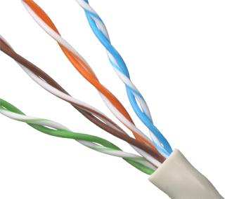
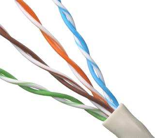

Introducción
Los medios de transmisión son los elementos físicos o no físicos que permiten el transporte de señales desde el emisor hasta el receptor dentro de un sistema de comunicación. Su estudio es fundamental en las telecomunicaciones, ya que la calidad, velocidad y confiabilidad de la comunicación dependen directamente del medio utilizado. Según William Stallings y Behrouz Forouzan, los medios de transmisión constituyen uno de los componentes más importantes en el diseño de redes y enlaces de comunicación.
Desarrollo
Los medios de transmisión se clasifican principalmente en guiados y no guiados. Los medios guiados utilizan un soporte físico para conducir la señal, como cables metálicos o fibra óptica, mientras que los no guiados emplean el espacio libre como medio de propagación. Autores como Tanenbaum y Proakis explican que la elección del medio depende de factores como el ancho de banda requerido, la distancia, el costo y la susceptibilidad al ruido e interferencias.
 

Conclusión
En conclusión, los medios de transmisión son un elemento clave en las telecomunicaciones, ya que determinan el desempeño general de la comunicación. La correcta selección del medio permite optimizar la transmisión de información y garantizar una comunicación eficiente.